ES118 Lecture #4
Data types, operator precedence, registers, mathematical expressions
Ufuk Baler, MSc. & Asst. Prof. Dr. Fethi Okyar
Software libraries/modules
- They are a collection of functions, and variables
- We intentionally select a software library to serve a specific purpose (e.g. NumPy for matrix manipulation)
- By using software libraries we achieve
- using a function pre-written for a specific task without coding it from scratch
- reduce errors
- reduce time
Importing a library
- a library is imported with the
importstatement. importis generally followed by theasstatement to call the library with a shorter name
import numpy as np
Reading manuals function
The information of a NumPy function or variable can be obtained by
np.info() function
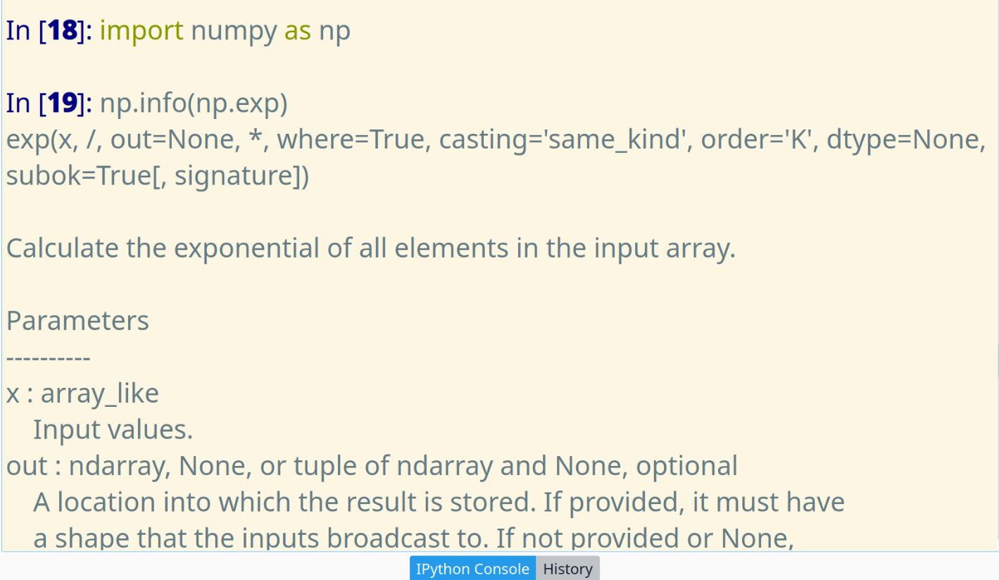

Using functions
Functions have
- a function name
- argument(s)
- output(s)
In [12]: import numpy as np
In [13]: x = -5
In [14]: np.abs(x)
Out[14]: 5
In [16]: x = 5
In [17]: y = 2
In [18]: np.remainder(x , y)
Out[18]: 1
Data types/classes
numeric data types
- integers
- signed
- unsigned
- floating-point numbers
- single-precision
- double-precision
- lists
- tuples
integer (int)
A computer can store numbers represented in sequences of bits.
- registers store bits (0 & 1): _ _ _ _ _ _ _ _
- leftmost bit represent the sign: 0 => positive or 1 => negative
- remainder bits represent the numerical value of the integer
- Ex.: 114 => \(114 = 1(2^6) + 1(2^5) + 1(2^4) + 0(2^3) + 0(2^2) + 1(2^1) + 0(2^0)\) =>*0* 1 1 1 0 0 1 0
- Ex.: -114 =>
- First find the absolute value of -114 in binary representation: 0 1 1 1 0 0 1 0
- Find the complement: 1 0 0 0 1 1 0 1
- Add 1 to the complement: 1 0 0 0 1 1 1 0
- Ex.: Sum 114 and -114 in binary representation: 0 0 0 0 0 0 0 0
- Ex.: Compute \(4-110\) in binary representation:
- 4 => 0 0 0 0 0 1 0 0
- -110 =>
- absolute: 0 1 1 0 1 1 1 0
- complement: 1 0 0 1 0 0 0 1
- add 1: 1 0 0 1 0 0 1 0
- sum the binary representations
- 1 0 0 1 0 1 1 0 (remark: negative by the first digit)
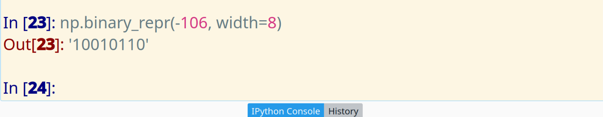
- converting the binary result to its base-10 representation
- complement: 0 1 1 0 1 0 0 1
- add 1: 0 1 1 0 1 0 1 0
- apply the sign: 1 1 1 0 1 0 1 0 is -106
- Limitation on integers
You could store 32-bit or 64-bit integers depending on your register size of your CPU
type/class range signed 8-bit int \(-2^7\), \(2^7-1\) signed 16-bit int \(-2^{15}\), \(2^{15}-1\) signed 32-bit int \(-2^{31}\), \(2^{31}-1\) signed 64-bit int \(-2^{63}\), \(2^{63}-1\) unsigned 8-bit int \(0\), \(2^{8}-1\) unsigned 16-bit int \(0\), \(2^{16}-1\) unsigned 32-bit int \(0\), \(2^{32}-1\) unsigned 64-bit int \(0\), \(2^{64}-1\) - Conversion of integers
Data type of a real number is converted using
np.int8()np.int16()np.int32()np.int64()
Ex.: Conversion of real numbers to 8-bit integers in NumPy
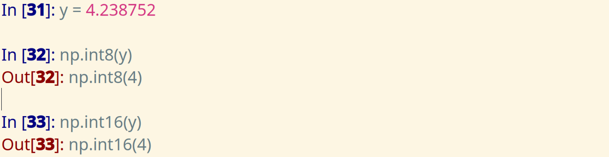
floating-point numbers (IEEE 754 standard)
Remark: Let's define a number in scientific notation in base-10.
\(3650000 = 3.65 \times 10^6\)
- sign: positive
- exponent: 6
- mantissa (significand): 3.65
Now, let's convert -40.500900 to a single precision (32-bit CPU) floating-point number:
- assign the sign bit: 1 for the negative
- convert 40 to binary number:
- \[40 = 1(2^5) + 0(2^4) + 1(2^3) + 0(2^2) + 0(2^1) + 0(2^0) \equiv 101000\]
- convert 0.500900 to binary:
- 0.500900 * 2 = 1.001800 => 1
- 0.001800 * 2 = 0.003600 => 0
- 0.003600 * 2 = 0.007200 => 0
- 0.007200 * 2 = 0.014400 => 0
- 0.014400 * 2 = 0.028800 => 0
- 0.028800 * 2 = 0.057600 => 0
- 0.057600 * 2 = 0.115200 => 0
- 0.115200 * 2 = 0.230400 => 0
- 0.230400 * 2 = 0.460800 => 0
- 0.460800 * 2 = 0.921600 => 0
- 0.921600 * 2 = 1.843200 => 1
- 0.843200 * 2 = 1.686400 => 1
- 0.686400 * 2 = 1.372800 => 1
- 0.372800 * 2 = 0.745600 => 0
- 0.745600 * 2 = 1.491200 => 1
- 0.491200 * 2 = 0.982400 => 0
- 0.982400 * 2 = 1.964800 => 1
- 0.964800 * 2 = 1.929600 => 1
- 0.929600 * 2 = 1.859200 => 1
- 0.859200 * 2 = 1.718400 => 1
- 0.718400 * 2 = 1.436800 => 1
- 0.436800 * 2 = 0.873600 => 0
- 0.873600 * 2 = 1.747200 => 1
Continue the algorithm until the fraction is equal to 0.
In this case the fraction goes as 1000000000111010111110110111111010010000111111111001…
Lastly,
- convert the exponent into binary representation for a 32-bit CPU
- join the whole and fraction parts in binary 101000.10000000001110101111101…
- represent the binary number in scientific notation \[1.01000100000000011101011 \times 2^5\]
- => exponent is +5
- 5 + 127 = 132 (127 comes from the IEEE standard)
- Convert 132 to binary: \[132 = 1(2^7) + 0(2^6) + 0(2^5) + 0(2^4) + 0(2^3) + 1(2^2) + 0(2^1) + 0(2^0) \equiv 10000100\]
Therefore in a 32-bit CPU -40.500900 is approximately represented as a floating-point data type as
| sign | exponent | mantissa (after the floating-point) |
|---|---|---|
| 1 | 10000100 | 01000100000000011101011 |
Proof:
If the floating-point data is converted to the decimal number:
- \[-1.01000100000000011101011 \times 2^5 =\]
- \[-[1(2^0) + 1(2^{-2}) + 1(2^{-6}) + 1(2^{-16}) + 1(2^{-17}) + 1(2^{-18})\]
- \[ + 1(2^{-20}) + 1(2^{-22}) + 1(2^{-23})] \times 2^5 = -40.500896\]
- Therefore, we can say that NOT ALL numbers are accurately represented with floating-point number data type.
- Neverthless, floating-point number data type can approximately represent the real numbers.
- Regardless of their limitations, they are well suited for real world problems.
Scientific notation in Python
- \(x = 1.192(10^5)\) \(\rightarrow\) x = 1.192e+5
- \(y = 5.08(10^{-12})\) \(\rightarrow\) y = 5.08e-12
lists
- A list is a set of data enclosed by square brackets:
[ ]
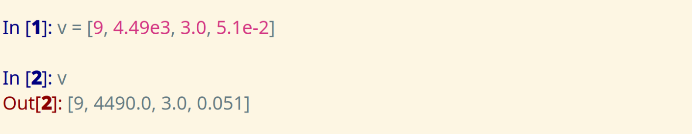
- An element of a list is accessed using an index value
v[ index ]
index starts from 0
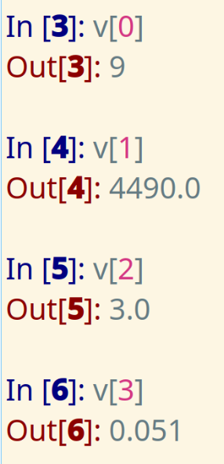
- Multiple elements of a list is accessed using start and stop indices:
v[ start_index : stop_index ]
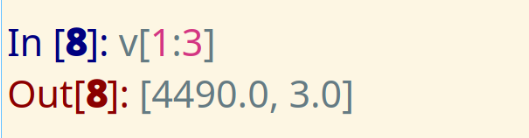
- Jump through elements of the array using an increment value:
v[ start_index : stop_index : increment ]

- Change the elements of the array utilizing indexing:
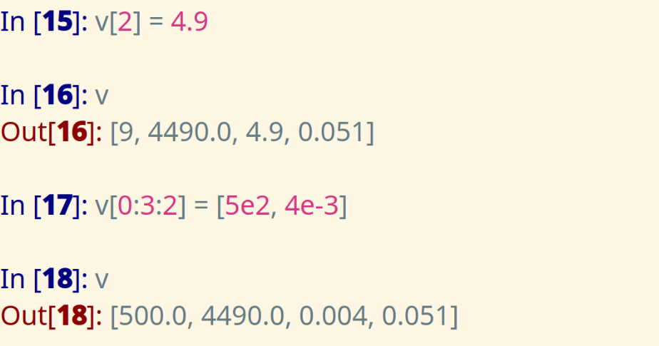
tuples
- Tuples is another set of data enclosed by parantheses:
( )
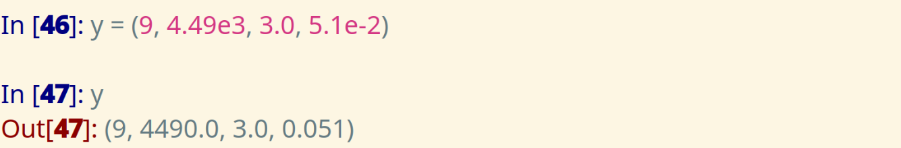
- but it is not mutable -> the elements cannot be changed
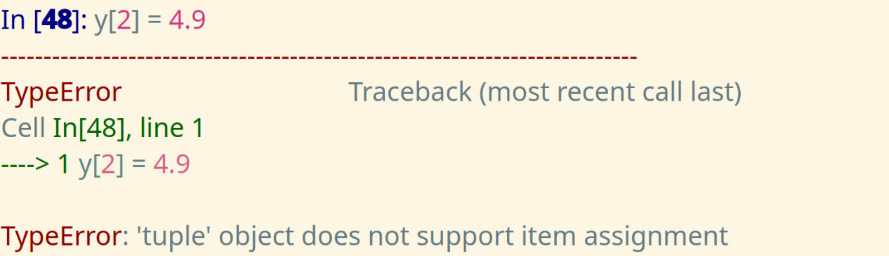
strings
- String is another set of data enclosed by quotation marks:
" "or' ' - The data consist of characters
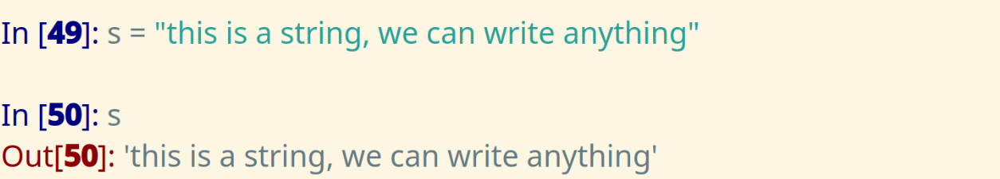
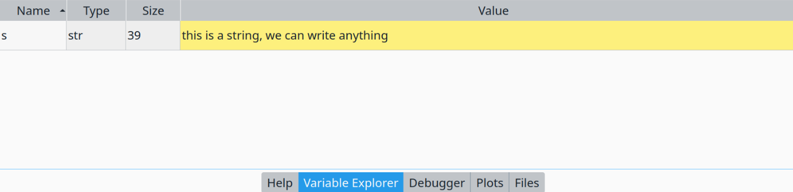
Operator precedence
| Operation | Character |
|---|---|
| addition | + |
| substraction | - |
| multiplication | * |
| division | / |
| exponentiation | ** |
| modulus | % |
term
- Terms are separated by
+or-sign:
1/9
3.2*z**10
expression
- An expression is a collection of terms:
1/9 + 7/80/100 + 3.2*z**10 - 1.4
- Exponentiation operation has precedence over multiplication and division
3.2*z**10/2
- Parantheses
()have precedence over anything
1/(9 + (7/80)/100) + 3.2*z**10/2 - 1.4
Elementary math functions
Rounding (round-off) functions
There are round-off functions in NumPy
np.fix: round towards 0, Ex.:np.fix(-4.33) = -4ornp.fix(4.66) = 4np.floor: round towards \(-\inf\), Ex.:np.floor(-4.33) = -5ornp.floor(4.66) = 4np.ceil: round towards \(\inf\), Ex.:np.ceil(-4.33) = -4ornp.ceil(4.66) = 5np.round: round towards the nearest integer, Ex.:np.round(-4.33) = -4ornp.round(4.66) = 5
Trigonometric functions
- The unit is in radians for the angle values
- To compute in degrees:
np.sin(angle*np.pi/180)
| function | NumPy |
|---|---|
| sine | np.sin |
| inverse sine | np.arcsin |
| cosine | np.cos |
| inverse cosine | np.arccos |
| tangent | np.tan |
| inverse tangent | np.arctan |
| function | NumPy |
|---|---|
| hyperbolic sine | np.sinh |
| inverse hyperbolic sine | np.arcsinh |
| hyperbolic cosine | np.cosh |
| inverse hyperbolic cosine | np.arccosh |
| hyperbolic tangent | np.tanh |
| inverse hyperbolic tangent | np.arctanh |
Exponential and logarithmic functions
| function | NumPy |
|---|---|
| exponential | np.exp |
| natural logarithm | np.log |
| base-10 logarithm | np.log10 |
| square root | np.sqrt |
Other mathematical functions
| function | NumPy |
|---|---|
| absolute value | np.abs |
| determine sign | np.sign |
| remainder after division | np.remainder |
Implementation of mathematical expressions, and some equations
Compute the variables below in NumPy
- \(y_1 = x^{-20.44} \cos(x^{-8} \log{(x)})\)
- $y2 = xπ k ex-2 $
- \(y_3 = -\Bigg( 5k - \frac{1}{4} \Bigg)\pi\)
- \(y_4 = \sqrt{z - 3}\)
- \(z_1 = \frac{1}{\sqrt{2(y^2 - x^2)}}\)
- \(z_2 = \frac{|x-1|}{\ln{(1/y)}\log{(6z)}}\)
- \(z_3 = \sin^{-1}\Bigg(\frac{7x}{\pi}\Bigg)\)
- \(z_4 = 20.2 (10)^{-17}\)
- \(z_5 = 8\pi (10)^4\)
- Find \(r\), when \(x=5\) and \(y=1\)
- \(r = ((x-20)^{-2} + (y+10)^2)^{1/2}\)
- Find \(f\), when \(x=3\), \(y=\log{(8)}^4\), \(z=|\tan^{-1}{(0.1029)}|\), \(d=2\), and \(b=50\)
- \(f = \frac{2^{{(x + (z+1)^{-3}/2)}^d}}{x+y+\sqrt{b}}\)
- Find \(c\), when \(x=3(10)^{-2}\), \(y=e^2\), \(g=9.81\) and \(v=|\cos^{-1}{(0.1029)}|\)
- \(c = \frac{1}{9 g^{y^2 + \ln{(\sqrt{1-x})}}} - v^{1/4} + \Big|e^{\frac{2 \pi x}{\tan^{-1}(\pi y/180)}}\Big|\)
- Find the remainder of \(\frac{19}{3}\) and assign/equate to a variable called
k